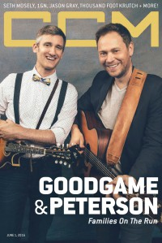

CMnexus
: Contemporary Christian culture, music, and media.
|
Andrew PetersonOn the cover
1 June 2016
CCM Digital | Media coverage:- Apr 1999 in CCM "Watershed Records", by Laura Harris
- May 2000 in CCM "Talent Pool: Stories to Tell", by Brian Quincy Newcomb
- Oct 2001 in CCM "Breaking Away", by Wendy Lee Nentwig
- Feb 2002 in CCM "The Joy of Marriage", by Deborah Evans Price
- Apr 2003 in CCM "Ask The Artist: Andrew Peterson"
- Jul 2004 in CCM "Artist Q & A"
- Jul 2010 in CCM Digital "What's Next: Writing down the Stars", by Beau Black
- Dec 2011 in Christianity Today "Who's Next: The Old Is The New", by Mark Moring
- Aug 2012 in CCM Digital "Illuminations"
- 15 Jan 2016 in CCM Digital "Earthquakes and Afterglows", by Matt Conner
- 1 Jun 2016 in CCM Digital "Families On The Run", by Matt Conner
- 15 Sep 2017 in CCM Digital "To Be Loved, Not To Be Loved", by Andrew Greer
- 1 Oct 2017 in CCM Digital "Remembering Rich at the Ryman", by Mark D. Geil
Albums & reviews:1996: Walk
2004: Behold the Lamb of God: The True Tale of the Coming of Christ
2005: Appendix A: Bootlegs and B Sides
2007: Appendix M: Media/Music/Movies
2008: Resurrection Letters Vol. II
2012: Light for the Lost Boy
2013: Light For The Lost Boy (Special Edition)
2014: After All These Years
2015: The Burning Edge of Dawn
2018: Resurrection Letters: Vol. I
2020: Behold the Lamb of God (20th Anniversary)
Award Summary (Nominations / Wins)
Dove Awards2013 Dove Awards2015 Dove Awards- Recorded Music Packaging: After All These Years
2016 Dove Awards- Inspirational Album: The Burning Edge of Dawn
2018 Dove Awards- Recorded Music Packaging: Resurrection Letters: Vol. I
2019 Dove Awards2020 Dove Awards2021 Dove AwardsPublished articles:1 article credited in CCM: 2006.Books about Andrew Peterson
- "Andrew Peterson" in The Encyclopedia of Contemporary Christian Music (Mark Allan Powell, 2002).
|
|